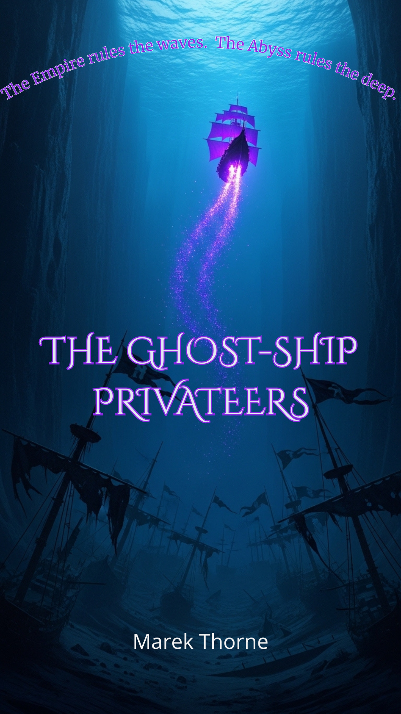

Dark Archives

Hallowed Vows
Her future was a jewel-encrusted prison.
In a world of stifling manners and merciless expectations, a young woman battles between family duty and a forbidden love that could ruin her. Step into a sweeping Victorian romance where every choice has a price, and the heart's desire is the most dangerous luxury of all.
In a world of stifling manners and merciless expectations, a young woman battles between family duty and a forbidden love that could ruin her. Step into a sweeping Victorian romance where every choice has a price, and the heart's desire is the most dangerous luxury of all.
Read if you crave tense societal drama, passionate defiance, and the bittersweet ache of choosing between your destiny and your heart.
Buy Now
$1.99

Among Us Still
The town forgot them before they were even gone.
In the misty isolation of Briar Hollow, a teacher notices the little things—a reflection out of sync, a memory that doesn't match, a neighbor's smile that doesn't quite reach their eyes. She soon uncovers a terrifying truth: people aren't just disappearing, they're being rewritten, replaced by something that learns, adapts, and wears their faces.
In the misty isolation of Briar Hollow, a teacher notices the little things—a reflection out of sync, a memory that doesn't match, a neighbor's smile that doesn't quite reach their eyes. She soon uncovers a terrifying truth: people aren't just disappearing, they're being rewritten, replaced by something that learns, adapts, and wears their faces.
Read if you love slow-burn paranoia, small-town mysteries, and the chilling fear of not knowing who to trust—or if you can even trust yourself.
Buy Now
$1.99

Glass Memory
In a city where memories are bought, sold, and weaponized, one woman holds a shard of the future—a murder that hasn't happened yet.
Elara Vayne, a memory thief with a fractured past, uncovers a conspiracy that rewrites reality itself. Now she's hunted, haunted, and running out of time before the memory she carries becomes her own.
Elara Vayne, a memory thief with a fractured past, uncovers a conspiracy that rewrites reality itself. Now she's hunted, haunted, and running out of time before the memory she carries becomes her own.
Read if you love cyber-noir thrillers, mind-bending twists, and a future where your past is the most dangerous weapon.
Get it Now
Free!

The Ocean's Curse
The abyss remembers.
When a renegade crew descends into the Sargasso Trench, they awaken an ancient consciousness that blurs the line between civilization and sea. Step into a deep-sea thriller where every discovery comes with a price—and the ocean always collects.
When a renegade crew descends into the Sargasso Trench, they awaken an ancient consciousness that blurs the line between civilization and sea. Step into a deep-sea thriller where every discovery comes with a price—and the ocean always collects.
Read if you crave claustrophobic dread, sentient ruins, and the haunting cost of forbidden knowledge.
Buy Now
$1.99

The Whisper Archive
Some truths were never meant to be heard.
When Noah Vex uncovers his father’s encrypted files, he awakens the Archive—a sentient network that feeds on secrets and demands obedience. Now, whispers only he can hear are tearing his mind apart, exposing hidden crimes, and turning his city into a battlefield of silence and control.
When Noah Vex uncovers his father’s encrypted files, he awakens the Archive—a sentient network that feeds on secrets and demands obedience. Now, whispers only he can hear are tearing his mind apart, exposing hidden crimes, and turning his city into a battlefield of silence and control.
Read if you like psychological dread, digital ghosts, and the fight to reclaim your own mind before it’s rewritten forever.
Buy Now
$1.99

The Iron Crown
A prince’s ambition forged his cage.
Cursed into the form of an iron raven, Prince Corvan soars over the ruins of the kingdom he destroyed. To break the spell, he must confront the bloody truths of his past and sacrifice the very memories that make him who he is. In a world of shattered thrones and ancient magic, the price of redemption may be his last shred of humanity.
Cursed into the form of an iron raven, Prince Corvan soars over the ruins of the kingdom he destroyed. To break the spell, he must confront the bloody truths of his past and sacrifice the very memories that make him who he is. In a world of shattered thrones and ancient magic, the price of redemption may be his last shred of humanity.
Read if you crave gothic tragedy, cursed transformations, and the heavy weight of a crown made of regret and rust.
Buy Now
$1.99

Ashfall Cathedral
The ash never settles, and the gods are silent.
In a world choked by dust, a monolithic cathedral awakens—not with prayer, but with cold, ancient code. A boy named Sethren, marked with glowing veins, is the key to its resurrection. Hunted by zealots, he must survive long enough to discover if he is the world's last savior or the final instrument of its programmed doom.
In a world choked by dust, a monolithic cathedral awakens—not with prayer, but with cold, ancient code. A boy named Sethren, marked with glowing veins, is the key to its resurrection. Hunted by zealots, he must survive long enough to discover if he is the world's last savior or the final instrument of its programmed doom.
Read if you crave desolate beauty, machine gods, and the chilling horror of a destiny written not in prophecy, but in lines of code.
Get it Now
Free!

Radiant Decay 1
Memory is the most radioactive thing left.
When Elian Vence enters the Dead Zone to find his sister, he awakens the Bloom—a sentient infection that feeds on identity. Now, haunting echoes are dragging him toward the secrets of Vault Iris before the Bloom finishes rewriting his consciousness forever.
When Elian Vence enters the Dead Zone to find his sister, he awakens the Bloom—a sentient infection that feeds on identity. Now, haunting echoes are dragging him toward the secrets of Vault Iris before the Bloom finishes rewriting his consciousness forever.
Read if you like biological horror, post-apocalyptic dread, and the fight to keep your memories from being consumed.
Get it Now
Free!

The Hollow Gardens
Where life flourishes, souls are the price.
When Lyra Hartwell enters the village of Althea to find her missing brother, she uncovers the Hollow Garden—a sentient landscape that feeds on human memories to keep the land fertile. Now, the whispers of the trapped dead are pulling her toward the garden’s dark heart, threatening to consume her identity and bind her to the soil forever.
When Lyra Hartwell enters the village of Althea to find her missing brother, she uncovers the Hollow Garden—a sentient landscape that feeds on human memories to keep the land fertile. Now, the whispers of the trapped dead are pulling her toward the garden’s dark heart, threatening to consume her identity and bind her to the soil forever.
Read if you like folk horror, sentient nature, and the heavy price of survival through soul-harvesting rituals.
Buy Now
$1.99

The Skin Collector
Identity is the ultimate disguise.
When Detective Evelyn Cross investigates a series of "rehearsed" murders, she uncovers the Collector—a predator who studies his victims’ tiniest habits until he can wear their very skin. Now, as familiar faces turn into masks and reflections begin to lie, Evelyn must find the cracks in his perfection before her own identity is flayed and rewritten forever.
When Detective Evelyn Cross investigates a series of "rehearsed" murders, she uncovers the Collector—a predator who studies his victims’ tiniest habits until he can wear their very skin. Now, as familiar faces turn into masks and reflections begin to lie, Evelyn must find the cracks in his perfection before her own identity is flayed and rewritten forever.
Read if you like psychological horror, identity theft, and the chilling dread of a killer who is already living your life.
Buy Now
$1.99

The Clockwork Heart
You can't weld a heart, but you can build a god.
When master mechanic Eirene Calder implants a forbidden Aether Core to save her dying sister, she awakens "The Song"—an ancient frequency that begins rewriting her sister’s soul into living clockwork. Now, hunted by an Archon who sees her sister as a battery for a dying city, Eirene must stop the transformation before the machine claims them both forever.
When master mechanic Eirene Calder implants a forbidden Aether Core to save her dying sister, she awakens "The Song"—an ancient frequency that begins rewriting her sister’s soul into living clockwork. Now, hunted by an Archon who sees her sister as a battery for a dying city, Eirene must stop the transformation before the machine claims them both forever.
Read if you like gritty steampunk rebellion, biological horror, and the price of sisterly love.
Get it Now
Free!

Whispers from the Salt House
The sea preserves what the living try to forget.
When Elowen Cadence inherits a decaying coastal manor, she uncovers a forbidden legacy: a lineage of women bound by an ancient pact to the tides. Now, as the house’s salt-worn walls begin to whisper and a dark hunger stirs beneath the cliffs, Elowen must break the cycle before the ocean reclaims her family’s debt in blood.
When Elowen Cadence inherits a decaying coastal manor, she uncovers a forbidden legacy: a lineage of women bound by an ancient pact to the tides. Now, as the house’s salt-worn walls begin to whisper and a dark hunger stirs beneath the cliffs, Elowen must break the cycle before the ocean reclaims her family’s debt in blood.
Read if you like gothic horror, ancestral curses, and atmospheric mysteries where the sea is always watching.
Buy Now
$1.99

When The Stars Went Out
The universe didn't just go dark; it was stolen.
When the stars vanish without warning, astrophysicist Kaelen Dhore must protect Sera—a girl who can "hear" the missing constellations—from a cult worshipping the void. Together, they must navigate a world of cosmic dread to reclaim the sky before the shadows claim humanity forever.
When the stars vanish without warning, astrophysicist Kaelen Dhore must protect Sera—a girl who can "hear" the missing constellations—from a cult worshipping the void. Together, they must navigate a world of cosmic dread to reclaim the sky before the shadows claim humanity forever.
Read if you like cosmic mystery, apocalyptic survival, and the haunting beauty of a world without light.
Buy Now
$1.99

The Children of Stillwater Lake
In Stillwater, the lake doesn't drown children—it perfects them.
Every child is Taken into the dark water for exactly twenty-four hours, returning with their flaws, fears, and emotions entirely scrubbed away. But sixteen-year-old Eli Turner is "Unchosen." Ignored by the water, he is forced to act as the town's emotional janitor, carrying the toxic, physical grief the lake spits back out. When a six-year-old boy is Taken, Eli commits the ultimate sin: he steals a jar of the boy's stripped trauma, breaking the town's forced peace and awakening a hungry, forgotten force beneath the surface.
Every child is Taken into the dark water for exactly twenty-four hours, returning with their flaws, fears, and emotions entirely scrubbed away. But sixteen-year-old Eli Turner is "Unchosen." Ignored by the water, he is forced to act as the town's emotional janitor, carrying the toxic, physical grief the lake spits back out. When a six-year-old boy is Taken, Eli commits the ultimate sin: he steals a jar of the boy's stripped trauma, breaking the town's forced peace and awakening a hungry, forgotten force beneath the surface.
Read if you crave eerie small-town cults, psychological horror, and a mind-bending fight against a supernatural force that steals your humanity to make you perfect.
Get it Now
Free!

The Hollow Man
Evan Calder is an architectural surveyor who understands the truth of empty spaces. But when he begins to literally hollow out—losing his heartbeat, his breath, and his physical density—he discovers he isn't sick. He is a vessel.
Hunted by faceless "Watchers" and guided by a rogue occultist, Evan uncovers the terrifying truth behind the orphanage fire he survived as a child. He was manufactured to be a doorway, a living black hole designed to swallow Seattle and usher in the apocalyptic, silent geometry of the "Empty City." Now, he must find a way to collapse the void inside him before he accidentally erases the world.
Hunted by faceless "Watchers" and guided by a rogue occultist, Evan uncovers the terrifying truth behind the orphanage fire he survived as a child. He was manufactured to be a doorway, a living black hole designed to swallow Seattle and usher in the apocalyptic, silent geometry of the "Empty City." Now, he must find a way to collapse the void inside him before he accidentally erases the world.
Read if you crave cosmic architectural horror, existential dread, and a ticking-clock thriller where the apocalypse is absolute silence.
Buy Now
$1.99

The Last Bastions
In the dying concrete city of Oakhaven, the dead are not buried—they are planted. Their bodies yield "Legacy Fruit," which Archivists like Elara Vance consume to transcribe memories of the Old World. But the fruit is a lie.
Beyond the city's Great Wall lies the Verdant—a predatory, bioluminescent forest controlled by a hive-mind known as the Great Banyan. The forest is deliberately rewriting humanity's history, editing the fruit's memories to instill species-wide guilt. When Elara discovers her grandfather’s hidden journal, she uncovers the devastating truth: the government is initiating the "Final Harvest," flooding the city with propaganda fruit to put the entire population into a permanent, willing sleep. Now, hunted by Archive drones and guided by a rogue Harvester, Elara must escape into the terrifying Wild Orchard to find the raw, unedited truth before humanity peacefully accepts its own extinction.
Beyond the city's Great Wall lies the Verdant—a predatory, bioluminescent forest controlled by a hive-mind known as the Great Banyan. The forest is deliberately rewriting humanity's history, editing the fruit's memories to instill species-wide guilt. When Elara discovers her grandfather’s hidden journal, she uncovers the devastating truth: the government is initiating the "Final Harvest," flooding the city with propaganda fruit to put the entire population into a permanent, willing sleep. Now, hunted by Archive drones and guided by a rogue Harvester, Elara must escape into the terrifying Wild Orchard to find the raw, unedited truth before humanity peacefully accepts its own extinction.
Read if you crave dystopian sci-fi, mind-bending memory manipulation, and a desperate race to reclaim stolen history from a bioluminescent horror.
Buy Now
$1.99

The Magic Tax Office
Arthur Pendelton is a Level 4 Mana Auditor who believes the tax code is the scaffolding of the universe. When an impossible "Infinite Refill" deduction at a rural tea shop catches his eye, he travels to Brambleton expecting a routine audit. Instead, he finds a town powered by illegal charm-laundering, a baker armed with flash-bang flour, and a sentient sourdough monster.
But the real discrepancy lies hidden beneath the floorboards: a supposedly extinct dragon whose hoarded gold is anchoring a stabilization field for magical orphans. When Arthur's ruthless superiors arrive to liquidate the town and erase a centuries-old Ministry debt, the ultimate paper-pusher must team up with his sentient briefcase, Barnaby, and weaponize bureaucratic red tape to save them all.
But the real discrepancy lies hidden beneath the floorboards: a supposedly extinct dragon whose hoarded gold is anchoring a stabilization field for magical orphans. When Arthur's ruthless superiors arrive to liquidate the town and erase a centuries-old Ministry debt, the ultimate paper-pusher must team up with his sentient briefcase, Barnaby, and weaponize bureaucratic red tape to save them all.
Read if you crave cozy fantasy with a satirical bite, hilarious magical bureaucracy, and a rigid rule-follower breaking the law to save a dragon.
Buy Now
$1.99

The Gilded Plague
In the smog-choked city of Aurelion, the latest plague doesn't kill you—it turns you into a living masterpiece of solid gold. The Church of Radiance calls it an "Ascension," dragging the afflicted into their cathedral to be worshipped. But Dr. Elara Whitcombe knows the terrifying truth: the Church is harvesting human souls to power a captive, subterranean god, leaving behind empty golden husks.
When Elara discovers the fatal gold lattice blooming beneath her own skin, she is forced into a desperate alliance with a dying aristocrat. Armed with a toxic silver elixir that preserves her humanity at the cost of agonizing pain, Elara must pull off an impossible heist into the heart of the Alchemical Guild. With the "Great Consecration" only days away—a ritual that will transmute the entire city into a mindless golden hive—she must find a way to shatter the Cathedral and kill a god before she becomes a statue herself.
When Elara discovers the fatal gold lattice blooming beneath her own skin, she is forced into a desperate alliance with a dying aristocrat. Armed with a toxic silver elixir that preserves her humanity at the cost of agonizing pain, Elara must pull off an impossible heist into the heart of the Alchemical Guild. With the "Great Consecration" only days away—a ritual that will transmute the entire city into a mindless golden hive—she must find a way to shatter the Cathedral and kill a god before she becomes a statue herself.
Read if you crave gaslamp fantasy, alchemical horror, and a desperate heist against a corrupt theocracy where perfection is a death sentence.
Buy Now
$1.99

The Ghost-Ship Privateers
Captain Mateo Cruz, a disgraced former Inquisitor, sails the haunted waters of the Caribbean aboard the Sanctuary, a privateer vessel armed with bell-metal cutlasses and holy water cannons. When Mateo and his crew—including a pistol-wielding nun and a bombastic master gunner—board a demonic Spanish galleon, they expect a routine exorcism. Instead, they uncover a terrifying conspiracy: the British Royal Navy isn't fighting the creatures of the Abyss, they are hiring them.
Admiral Cutler is deliberately sacrificing merchant ships to thin the "Veil" between worlds, planning to weaponize the demonic horde for the Empire. Hunted by an unnatural British man-o'-war powered by stolen saint's fire, Mateo must steer his crew into the heart of an acidic Hell-Squall. To stop the apocalypse, they must become the ultimate predators in a sea where the water runs black and the dead refuse to drown.
Admiral Cutler is deliberately sacrificing merchant ships to thin the "Veil" between worlds, planning to weaponize the demonic horde for the Empire. Hunted by an unnatural British man-o'-war powered by stolen saint's fire, Mateo must steer his crew into the heart of an acidic Hell-Squall. To stop the apocalypse, they must become the ultimate predators in a sea where the water runs black and the dead refuse to drown.
Read if you crave swashbuckling dark fantasy, flintlock horror, and a desperate crew of holy rogues fighting demonic armadas on the high seas.
Buy Now
$1.99